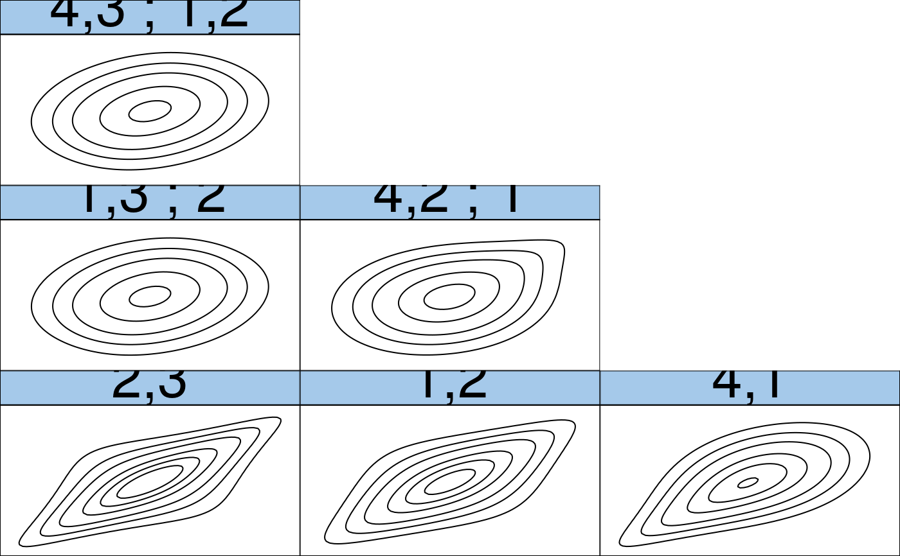

R/RVineStructureSelect.R
RVineStructureSelect.RdThis function fits either an R- or a C-vine copula model to a d-dimensional
copula data set. Tree structures are determined and appropriate pair-copula
families are selected using BiCopSelect() and estimated
sequentially (forward selection of trees).
RVineStructureSelect( data, familyset = NA, type = 0, selectioncrit = "AIC", indeptest = FALSE, level = 0.05, trunclevel = NA, progress = FALSE, weights = NA, treecrit = "tau", rotations = TRUE, se = FALSE, presel = TRUE, method = "mle", cores = 1 )
| data | An N x d data matrix (with uniform margins). |
|---|---|
| familyset | An integer vector of pair-copula families to select from.
The vector has to include at least one
pair-copula family that allows for positive and one that allows for negative
dependence. Not listed copula families might be included to better handle
limit cases. If |
| type | Type of the vine model to be specified: |
| selectioncrit | Character indicating the criterion for pair-copula
selection. Possible choices: |
| indeptest | logical; whether a hypothesis test for the independence of
|
| level | numeric; significance level of the independence test
(default: |
| trunclevel | integer; level of truncation. |
| progress | logical; whether the tree-wise specification progress is
printed (default: |
| weights | numeric; weights for each observation (optional). |
| treecrit | edge weight for Dissman's structure selection algorithm, see Details. |
| rotations | If |
| se | Logical; whether standard errors are estimated (default: |
| presel | Logical; whether to exclude families before fitting based on symmetry properties of the data. Makes the selection about 30\ (on average), but may yield slightly worse results in few special cases. |
| method | indicates the estimation method: either maximum
likelihood estimation ( |
| cores | integer; if |
An RVineMatrix() object with the selected structure
(RVM$Matrix) and families (RVM$family) as well as sequentially
estimated parameters stored in RVM$par and RVM$par2. The object
is augmented by the following information about the fit:
standard errors for the parameter estimates; note that these are only approximate since they do not account for the sequential nature of the estimation,
number of observations,
log likelihood (overall and pairwise)
Aikaike's Informaton Criterion (overall and pairwise),
Bayesian's Informaton Criterion (overall and pairwise),
matrix of empirical values of Kendall's tau,
matrix of p-values of the independence test.
R-vine trees are selected using maximum spanning trees w.r.t. some edge weights. The most commonly used edge weight is the absolute value of the empirical Kendall's tau, say \(\hat{\tau}_{ij}\). Then, the following optimization problem is solved for each tree: $$\max \sum_{\mathrm{edges }\; e_{ij} \in \; \mathrm{ in \; spanning \; tree}} |\hat{\tau}_{ij}|, $$ where a spanning tree is a tree on all nodes. The setting of the first tree selection step is always a complete graph. For subsequent trees, the setting depends on the R-vine construction principles, in particular on the proximity condition.
Some commonly used edge weights are implemented:
"tau" | absolute value of empirical Kendall's tau. |
"rho" | absolute value of empirical Spearman's rho. |
"AIC" | Akaike information (multiplied by -1). |
"BIC" | Bayesian information criterion (multiplied by -1). |
"cAIC" | corrected Akaike information criterion (multiplied by -1). |
If the data contain NAs, the edge weights in "tau" and "rho" are
multiplied by the square root of the proportion of complete observations. This
penalizes pairs where less observations are used.
The criteria "AIC", "BIC", and "cAIC" require estimation and
model selection for all possible pairs. This is computationally expensive and
much slower than "tau" or "rho".
The user can also specify a custom function to calculate the edge weights.
The function has to be of type function(u1, u2, weights) ... and must
return a numeric value. The weights argument must exist, but does not has to
be used. For example, "tau" (without using weights) can be implemented
as follows:
function(u1, u2, weights)
abs(cor(u1, u2, method = "kendall", use = "complete.obs"))
The root nodes of C-vine trees are determined similarly by identifying the node with strongest dependencies to all other nodes. That is we take the node with maximum column sum in the empirical Kendall's tau matrix.
Note that a possible way to determine the order of the nodes in the D-vine is to identify a shortest Hamiltonian path in terms of weights \(1-|\hat{\tau_{ij}|}\). This can be established for example using the package TSP. Example code is shown below.
For a comprehensive summary of the vine copula model, use
summary(object); to see all its contents, use str(object).
Brechmann, E. C., C. Czado, and K. Aas (2012). Truncated regular vines in high dimensions with applications to financial data. Canadian Journal of Statistics 40 (1), 68-85.
Dissmann, J. F., E. C. Brechmann, C. Czado, and D. Kurowicka (2013). Selecting and estimating regular vine copulae and application to financial returns. Computational Statistics & Data Analysis, 59 (1), 52-69.
RVineMatrix(),
BiCop(),
RVineCopSelect(),
plot.RVineMatrix(),
contour.RVineMatrix(),
foreach::foreach()
Jeffrey Dissmann, Eike Brechmann, Ulf Schepsmeier, Thomas Nagler
# load data set data(daxreturns) # select the R-vine structure, families and parameters # using only the first 4 variables and the first 250 observations # we allow for the copula families: Gauss, t, Clayton, Gumbel, Frank and Joe daxreturns <- daxreturns[1:250, 1:4] RVM <- RVineStructureSelect(daxreturns, c(1:6), progress = TRUE)#>#>#>#> List of 20 #> $ Matrix : num [1:4, 1:4] 3 4 1 2 0 2 4 1 0 0 ... #> $ family : num [1:4, 1:4] 0 5 5 2 0 0 4 2 0 0 ... #> $ par : num [1:4, 1:4] 0 1.183 1.111 0.648 0 ... #> $ par2 : num [1:4, 1:4] 0 0 0 2.48 0 ... #> $ names : chr [1:4] "ALV.DE" "BAS.DE" "BAYN.DE" "BMW.DE" #> $ MaxMat : num [1:4, 1:4] 3 2 2 2 0 2 1 1 0 0 ... #> $ CondDistr :List of 2 #> ..$ direct : logi [1:4, 1:4] FALSE TRUE TRUE TRUE FALSE FALSE ... #> ..$ indirect: logi [1:4, 1:4] FALSE FALSE FALSE FALSE FALSE TRUE ... #> $ type : chr "D-vine" #> $ tau : num [1:4, 1:4] 0 0.129 0.122 0.449 0 ... #> $ taildep :List of 2 #> ..$ upper: num [1:4, 1:4] 0 0 0 0.444 0 ... #> ..$ lower: num [1:4, 1:4] 0 0 0 0.444 0 ... #> $ beta : num [1:4, 1:4] 0 0.146 0.137 NA 0 ... #> $ call : language RVineStructureSelect(data = daxreturns, familyset = c(1:6), progress = TRUE) #> $ nobs : int 250 #> $ logLik : num 188 #> $ pair.logLik: num [1:4, 1:4] 0 3.84 3.76 71.62 0 ... #> $ AIC : num -360 #> $ pair.AIC : num [1:4, 1:4] 0 -5.67 -5.52 -139.24 0 ... #> $ BIC : num -332 #> $ pair.BIC : num [1:4, 1:4] 0 -2.15 -2 -132.2 0 ... #> $ emptau : num [1:4, 1:4] 0 0.126 0.112 0.432 0 ... #> - attr(*, "class")= chr "RVineMatrix"#> tree edge | family cop par par2 | tau utd ltd #> ---------------------------------------------------------- #> 1 2,3 | 2 t 0.65 2.48 | 0.45 0.44 0.44 #> 1,2 | 2 t 0.61 3.55 | 0.42 0.35 0.35 #> 4,1 | 14 SG 1.62 0.00 | 0.38 - 0.46 #> 2 1,3;2 | 5 F 1.11 0.00 | 0.12 - - #> 4,2;1 | 4 G 1.22 0.00 | 0.18 0.24 - #> 3 4,3;1,2 | 5 F 1.18 0.00 | 0.13 - - #> --- #> type: D-vine logLik: 187.94 AIC: -359.87 BIC: -331.7 #> --- #> 1 <-> ALV.DE, 2 <-> BAS.DE, 3 <-> BAYN.DE, 4 <-> BMW.DE## inspect the fitted model using plots if (FALSE) plot(RVM) # tree structure contour(RVM) # contour plots of all pair-copulas## estimate a C-vine copula model with only Clayton, Gumbel and Frank copulas CVM <- RVineStructureSelect(daxreturns, c(3,4,5), "CVine") ## determine the order of the nodes in a D-vine using the package TSP library(TSP) d <- dim(daxreturns)[2] M <- 1 - abs(TauMatrix(daxreturns)) hamilton <- insert_dummy(TSP(M), label = "cut") sol <- solve_TSP(hamilton, method = "repetitive_nn") order <- cut_tour(sol, "cut") DVM <- D2RVine(order, family = rep(0,d*(d-1)/2), par = rep(0, d*(d-1)/2)) RVineCopSelect(daxreturns, c(1:6), DVM$Matrix)#> D-vine copula with the following pair-copulas: #> Tree 1: #> 2,3 t (par = 0.65, par2 = 2.48, tau = 0.45) #> 1,2 t (par = 0.61, par2 = 3.55, tau = 0.42) #> 4,1 Survival Gumbel (par = 1.62, tau = 0.38) #> #> Tree 2: #> 1,3;2 Frank (par = 1.11, tau = 0.12) #> 4,2;1 Gumbel (par = 1.22, tau = 0.18) #> #> Tree 3: #> 4,3;1,2 Frank (par = 1.18, tau = 0.13) #> #> --- #> 1 <-> ALV.DE, 2 <-> BAS.DE, 3 <-> BAYN.DE, #> 4 <-> BMW.DE